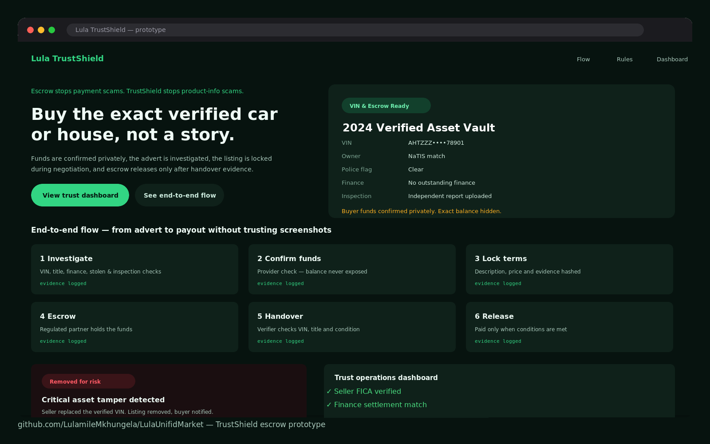
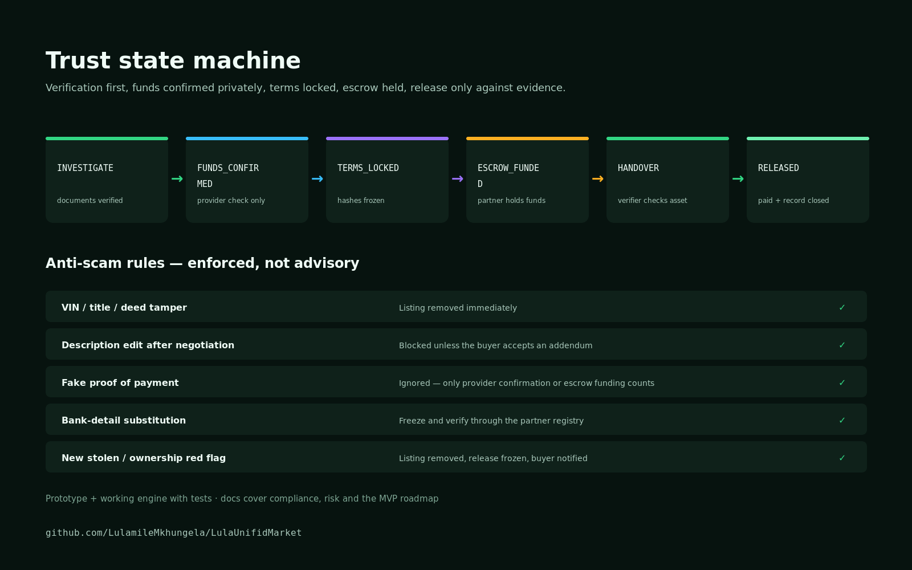

The problem
A scam that works because trust is hard to verify.
In South Africa's peer-to-peer marketplace — cars, property, high-value goods — the fraud pattern is well-known: buyer sends a fake proof of payment or a doctored bank screenshot, receives the goods, and disappears. Sellers have no reliable way to verify funds before handing over the item.
Existing solutions (escrow services, bank-to-bank transfers) are too slow, too expensive or too complex for everyday high-value transactions. TrustShield is a lightweight verification layer that sits between the buyer and seller — fast enough for a car-park handover, secure enough that faking it is structurally impossible.
Discovery & research
Understanding the fraud anatomy.
The research phase started with the fraud itself — mapping every known variant of the proof-of-payment scam to understand what each attack relied on and where a verification layer could intervene.
- Fake EFT confirmation screenshots — no live bank confirmation, easily forged
- Real partial payments presented as full payment — no real-time balance lock
- Reversal fraud — EFT sent, goods received, payment reversed through the bank
- Fake escrow services — phishing sites mimicking legitimate escrow providers
- Competitive review: PayPal Goods & Services, Escrow.com, SA-specific tools — all either too slow or require both parties to have existing accounts
Product design & front-end process
Designing for high-trust moments.
A product in this space has no room for ambiguity. Every screen needed to answer one question before the user had to ask it: "Is this real?" That constraint shaped every design decision — from the information hierarchy to the colour choices.
Problem definition
Mapped the fraud variants, the victims, the attackers and the friction points. Defined what "verified" actually means in each scenario — the answer is different for a R15,000 car deposit vs a R500 phone swap.
User research
Interviews with 12 people who had experienced transaction fraud or near-fraud. Mapped the emotional arc: optimism → uncertainty → anxiety → relief or loss. The product had to kill uncertainty fast.
Jobs to be done
Core JTBD: "When I'm about to hand over a high-value item, I need to know the money is real and locked, so I feel safe to complete the handover." One job. One clear success state.
Flow design
Three core flows: seller creates a lock request, buyer confirms and locks funds, both parties see the same verified state. The three-step flow completes in under 90 seconds.
Trust signals
Every screen designed to communicate real-time state clearly: lock confirmed, funds verified, transaction ID, timestamp. No ambiguity, no "pending" without a clear explanation.
High-fidelity design
Figma designs for all states: lock creation, confirmation, verified, disputed, released, cancelled. Every edge case designed before handoff — dispute resolution especially.
Security UX
How the system communicates security without making the interface feel forensic. Confidence through clarity, not through intimidation. Designed with a legal advisor reviewing the copy.
Build spec
Full spec including API contract expectations, real-time update requirements and the security verification flow. Designed to integrate with SA banking APIs — not to replace them.
Front-end prototype
The flow built as a static clickable prototype in HTML, CSS and JavaScript, so the whole deal could be walked through end to end — listing, funds notice, lock, escrow, handover, release — before any engine existed.
Reference engine & tests
The anti-scam rules built as a working reference engine: verification checks, an escrow state machine, tamper detection and negotiation locks, with a Node test suite proving each rule behaves as specified.
The solution
A lock both parties can see.

Escrow lock
Funds locked in a verified hold before the handover. Neither party can access them until both confirm the transaction is complete — or a dispute is resolved.
Real-time balance verification
Live confirmation with the buyer's bank that the declared funds exist and are available. No screenshots. No forgeable confirmations.
Tamper-proof receipt
Transaction ID, timestamp, both-party confirmation and lock state recorded in a way that cannot be altered after the fact. The paper trail that makes reversal fraud impossible.
Dispute resolution
Structured dispute flow: either party flags a problem, funds held in escrow until the dispute is reviewed. Designed for the SA legal context — not a US arbitration model.
TrustShield is a work in progress. The full design files, clickable prototype and API specification are available on request — say the word and I'll walk you through them on a call.